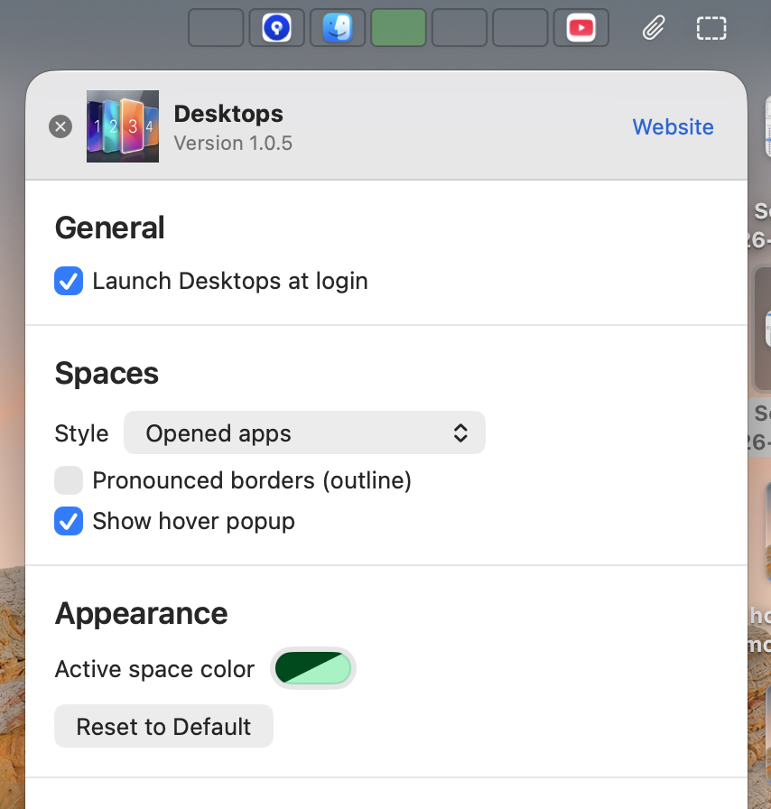
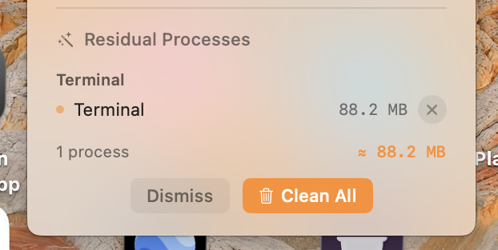

1. The Problem with Default macOS Spaces
macOS Spaces (Apple's implementation of virtual desktops) is one of the most powerful multitasking features on the Mac. Whether you are running a 13-inch MacBook Air, a dual-screen MacBook Pro workstation, or an iMac, dividing your work across multiple virtual desktops allows you to segregate code editors, communication tools, design canvases, and research tabs into dedicated zones.
However, macOS has a frustrating design oversight that has bugged power users for over a decade: macOS never tells you which Space you are currently on.
Once you switch to a desktop, there is zero visual feedback in the menu bar or Dock indicating whether you are in Desktop 1, Desktop 3, or Desktop 5. You are forced to rely on mental memory or constantly trigger Mission Control just to re-orient yourself.
Studies on developer and knowledge worker productivity indicate that micro-interruptions—such as bringing up Mission Control to check where a browser window lives—break cognitive flow state and cost up to 15 to 25 minutes of regained focus every day.
2. Why Native Gestures and Shortcuts Cause Fatigue
Apple gives you three default ways to navigate between virtual desktops, but each comes with serious ergonomics drawbacks:
- Three- or Four-Finger Trackpad Swipes: Smooth and intuitive on a laptop trackpad, but repetitive swiping throughout an 8-hour workday leads to finger strain. Furthermore, if you work at a desk with an external mouse (like a Logitech MX Master or standard ergonomic mouse), horizontal swiping is clunky or requires custom thumb button mapping.
- Ctrl + Left/Right Arrow: Sequential navigation means if you are on Desktop 1 and need to jump to Desktop 4, you must trigger the shortcut three consecutive times and endure three full-screen sliding animations.
- Ctrl + Number Keys: Apple allows mapping Ctrl + 1, Ctrl + 2, etc., in System Settings > Keyboard > Keyboard Shortcuts > Mission Control. However, this requires using two hands or awkward pinky stretches, and you still have to remember which number corresponds to which project.
3. The Solution: A Persistent Menu Bar Space Indicator
The ideal workflow is simple: your top menu bar should always display your open virtual desktops, clearly highlight the active one, and allow you to jump directly to any Space with a single mouse click.
This is exactly what DesktopPlus (the spiritual successor and modern evolution of utilities like Spaceman) provides. Built as a native, ultra-lightweight Swift utility, DesktopPlus sits quietly in your menu bar and delivers real-time visibility into your macOS workspace environment.
4. Step-by-Step Setup Tutorial
Getting a functional desktop indicator running on macOS takes less than 60 seconds:
Download and Mount the Disk Image
Download the latest release of DesktopPlus (.dmg). Open the DMG file and drag DesktopPlus.app into your macOS /Applications folder.
Launch & Grant Accessibility Permissions
Open DesktopPlus from Spotlight (Cmd + Space) or Launchpad. When prompted, grant Accessibility permissions under System Settings > Privacy & Security > Accessibility. This standard macOS permission allows DesktopPlus to detect space switching events without modifying system files.
Enjoy 1-Click Space Navigation
Your active desktops will immediately appear in your menu bar. Click on any desktop number or badge to instantly jump straight to that space, skipping Mission Control entirely!

5. Customizing Your Desktops: Numbers, Dots, & Names
Every user has a different menu bar aesthetic. DesktopPlus includes multiple visual presentation modes so your workspace looks clean and cohesive:
- Numbers Mode: Clear numerical identifiers (
1,2,3) with the active desktop highlighted with a glowing indicator or inverted badge. - Minimalist Dots: Sleek pill-shaped dots that take minimal horizontal menu bar real estate—perfect for 13-inch MacBooks with a camera notch.
- Named Workspaces: Label your spaces by function—for instance, Dev, Chat, Research, and Music. You will always know at a glance whether you are on your work or personal desktop.
By default, macOS dynamically reorders your virtual desktops based on most recent use, which wrecks spatial muscle memory. To lock your spaces in permanent positions, go to System Settings > Desktop & Dock, scroll down to Mission Control, and toggle OFF "Automatically rearrange Spaces based on most recent use".
6. Feature Comparison: Apple Default vs. DesktopPlus
Here is how the default macOS multitasking experience stacks up against an enhanced menu bar workflow:
| Multitasking Feature | macOS Default (Apple) | DesktopPlus Utility |
|---|---|---|
| Active Space Indicator | None (Hidden) | Persistent in Menu Bar |
| Switching Mechanism | Gestures or sequential arrows | 1-Click Instant Jump |
| Notch-Friendly Compact View | N/A | Sleek dots or numbers |
| External Monitor Support | Independent spaces without labels | Per-monitor active badges |
| RAM & Process Monitoring | Activity Monitor app only | Built-in Menu Bar Tools |
| Resource Footprint | Integrated in WindowServer | < 15 MB RAM (Native Swift) |
7. Bonus Tools: RAM Optimization & App Process Manager
In addition to desktop switching, power users running memory-intensive IDEs (like Xcode, VS Code, or Android Studio), Docker containers, or dozens of browser tabs often run into memory pressure on 8GB and 16GB unified memory MacBooks.
DesktopPlus includes a discreet Task & Memory Manager. You can inspect memory usage directly from the dropdown and free up inactive memory caches with a single click, keeping your system responsive without having to open Activity Monitor or terminal scripts.

8. Frequently Asked Questions
Apple does not natively provide a menu bar desktop indicator. With DesktopPlus, you can permanently display your active desktop number, icon, or customized name in the top menu bar so you always know your exact workspace location.
No. DesktopPlus does not require disabling SIP, running kernel extensions, or modifying system binaries. It operates completely within standard macOS user space using safe accessibility APIs.
Yes. DesktopPlus is optimized for modern Liquid Retina displays with the camera notch. You can choose compact numeric icons or minimalist dots so it takes minimal menu bar space.
The impact is virtually non-existent. DesktopPlus is written in native Swift and relies on event-driven notifications rather than continuous background polling. It consumes less than 0.1% CPU when idle.
Take Control of Your Mac Desktops Today
Multitasking on a Mac should feel effortless, not disorienting. By introducing a clear visual indicator to your menu bar, DesktopPlus transforms macOS virtual desktops into a high-speed productivity engine.